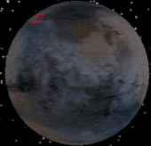
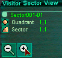
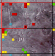
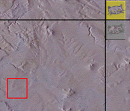
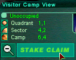

You first enter the game with 'World View'. Your first task is to 'Stake Claim' to your plot of land.
| The satalite view of planetoid Visitor will show you the active quadrants that can be occupied. Notice that only some of the quadrants are active on Visitor (represented by the grid). |  |
| Select a Quadrant and Click the magnifying glass tool to the right of the display to zoom into that Quadrant. |  |
| Colored squares are claimed camps. Click on one of the Sectors that has unclaimed camps, then click again on the "+" magnifying glass, which will take you to Camp Select View. |  |
| Click on an unclaimed square, and you will be given a button labelled "Stake Claim." |  |
| When you have chosen the camp you want click "Stake Claim." |  |